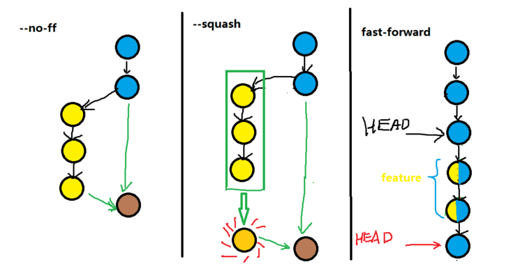

Git 学习笔记
本文系如下两篇入门教程的学习笔记
安装 Git
到官网下载 git 安装包，一路下一步即可
安装成功后可以设置邮箱和用户名
1 | git config --global user.name "username" |
设置后运行命令查看一下
1 | git config user.name |
本地仓库
创建本地库
新建文件夹，cd到里面，输入 git init 创建本地仓库 (repository)
提交修改
在该文件夹下创建一个文本文件，随便写点什么，然后输入 git add <filename> 将其添加到暂存区，中间可以添加多个文件，如果文件很多可以直接用 git add . 添加所有文件。
最后我们使用 git commit -m <message> 一次性提交到版本库
查看状态
使用 git status 可以看到自己是否有未提交的更改，使用 git diff <filename> 可以查看更改的具体内容
查看提交历史
使用 git log 可以查看所有提交和对应信息，git log --pretty=oneline 可以让信息输出得更简洁些
版本回退
在Git中，用 HEAD 表示当前版本，再往前用 HEAD^ HEAD^^ … HEAD~100 …
所以想回退上个版本可以用 git reset --hard HEAD^
如果想回到之后的版本，可以先用 git reflog 查看命令历史，再用 git reset --hard <版本号>
版本回退
如果想将工作目录的修改撤销，使用 git checkout -- <filename> 将该文件回退到版本库当前的版本
如果内容已提交到暂存区，使用 git reset HEAD <file> 清空暂存区的修改（工作目录的修改仍然在）
如果已经提交到版本库，使用上节的版本回退
删除文件
在工作目录删除文件后，使用 git rm <filename> 将删除提交到暂存区，然后 commit 即可
如果想要撤销删除，可以使用上节的 checkout 命令
远程仓库 Remote
添加远程仓库
假如我们在 Github 创建了一个仓库，我们可以执行如下代码将该远程仓库添加到本地（要操作远程仓库，必须把SSH Keys 添加到 Github 的设置中，步骤参考菜鸟教程）
1 | git remote add origin git@github.com:用户名/仓库名.git |
添加后，我们将本地仓库的内容同步到远程仓库：
1 | git branch -M main |
我们可以使用 git remote -v 查看远程仓库列表
要移除与远程仓库的连接使用： git remote rm 名字
从远程仓库克隆 Clone
如果想要将已有的远程仓库克隆到本地，可以执行：
1 | git clone git@github.com:用户名/仓库名.git |
从远程数据库拉取内容 Pull
想要获取远程仓库最新的版本，可以使用拉取命令：
1 | git pull |
分支管理
基本命令
查看分支：git branch
创建分支：git branch <name>
切换分支：git switch <branch name> 或者 git checkout <branch name>
创建+切换分支：git switch -c <name> 或者 git checkout -b <name>
合并某分支到当前分支：git merge <name>
删除分支：git branch -d <name>
分支冲突
如果两个分支修改了同样的地方，那么合并分支就会产生冲突，Git 会在发生冲突的地方修改文件内容，如下：
1 | >>>>> 分支A |
修改所有冲突的地方 add、commit 即可
如果我们想要提交到远程仓库，需要 pull 并修改冲突，才能成功 push 上去
可以使用 git log --graph --pretty=oneline --abbrev-commit 查看分支合并图：
1 | * 247c9a6 (HEAD -> main) can do it |
合并冲突时，git 默认使用 fast-forward 模式，会删掉分支信息，可以使用如下命令禁用：
1 | git merge --no-ff -m "message" dev |
关于 fast-forward 可以看这篇回答 git merge –no-ff是什么意思

因为我太笨后面没看懂，所以咕咕咕